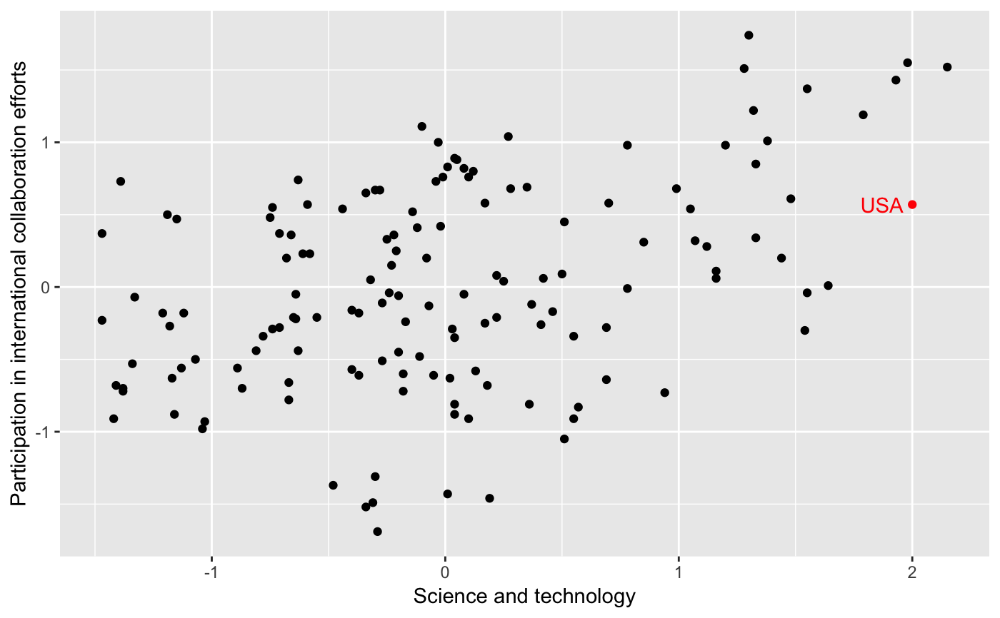
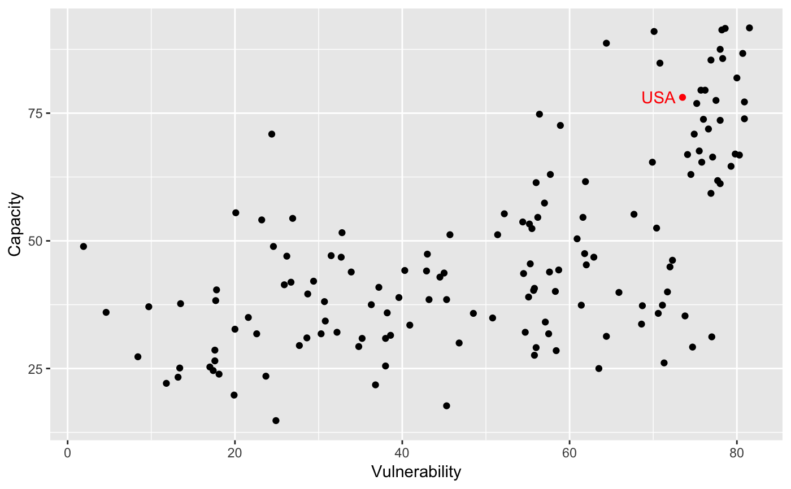

esi.RdThis data set comes from the 2005 Environmental Sustainability Index: Benchmarking National Environmental Stewardship. Countries are given an overall sustainability score as well as scores in each of several different environmental areas.
A data frame with 146 observations on the following 29 variables.
ISO3 country code.
Country.
Environmental Sustainability Index.
ESI core component: systems
ESI core component: stresses
ESI core component: vulnerability
ESI core component: capacity
ESI core component: global stewardship
Air quality.
Biodiversity.
Land.
Water quality.
Water quantity.
Reducing air pollution.
Reducing ecosystem stress.
Reducing population pressure.
Reducing waste and consumption pressures.
Reducing water stress.
Natural resource management.
Environmental health.
Basic human sustenance.
Exposure to natural disasters.
Environmental governance.
Eco-efficiency.
Private sector responsiveness.
Science and technology.
Participation in international collaboration efforts.
Greenhouse gas emissions.
Reducing transboundary environmental pressures.
ESI Component Indicators. 2005 Environmental Sustainability Index: Benchmarking National Environmental Stewardship, Yale Center for Environmental Law and Policy, Yale University & Center for International Earth Science Information Network (CIESIN), Columbia University
In collaboration with: World Economic Forum, Geneva, Switzerland Joint Research Centre of the European Commission, Ispra, Italy.
Available at http://www.yale.edu/esi/.
ESI and Component scores are presented as standard normal percentiles. Indicator scores are in the form of z-scores. See Appendix A of the report for information on the methodology and Appendix C for more detail on original data sources.
For more information on how each of the indices were calculated, see the documentation linked below.
Esty, Daniel C., Marc Levy, Tanja Srebotnjak, and Alexander de Sherbinin (2005). 2005 Environmental Sustainability Index: Benchmarking National Environmental Stewardship. New Haven: Yale Center for Environmental Law and Policy
data(esi) library(ggplot2) ggplot(data = esi, aes(x = cap_st, y = glo_col)) + geom_point(color = ifelse(esi$code == "USA", "red", "black")) + geom_text(aes(label = ifelse(code == "USA", as.character(code),"")), hjust = 1.2, color = "red") + labs(x = "Science and technology", y = "Participation in international collaboration efforts")ggplot(data = esi, aes(x = vulner, y = cap)) + geom_point(color = ifelse(esi$code == "USA", "red", "black")) + geom_text(aes(label = ifelse(code == "USA", as.character(code),"")), hjust = 1.2, color = "red") + labs(x = "Vulnerability", y = "Capacity")